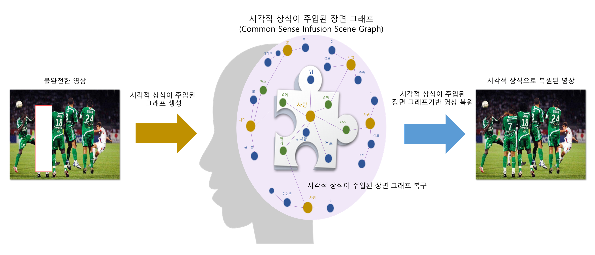

연구개발기간
2021. 04. 01 - 2023. 12. 31
연구개발목표
자기지도 학습에 의해 시각적 상식을 구축하고, 물체의 제한된 시점 또는 부분만 보더라도 물체 전체의 영상 형태⋅구조와 색상을 추론할 수 있는 인공지능 기술개발
- 자기지도 학습을 이용한 영상의 상식화 관련 깊은 신경망 모델개발
- 다양한 영상에 존재하는 객체의 정적⋅동적 속성과 그들 간의 관계를 이해하고, 이를 시각적 상식으로 표현하는 인공지능 모델링 기법 연구
- 영상 속 객체들의 속성을 파악하고 속성 간 의미 관계를 도출하고 표현하는 처리기술 개발
- 자기지도 학습에 의한 시각지능 요소기술 고도화